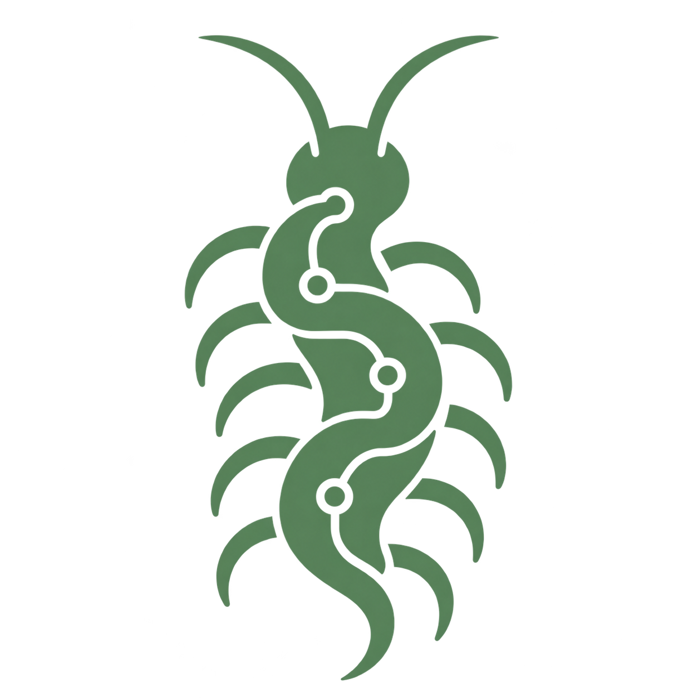

Latest / Current · Neuris v2

Neuris APEX 1.0.
1.0 / Experimental v1 release of the APEX generation
An experimental 3B cybersecurity input-classification model fine-tuned from Ministral 3B.
- Base model
- Ministral 3B
- Fine-tuning
- SFT + LoRA
- Quantization
- Q4_K_M
- Download
- ~2.1 GB
- Deployment
- Local / Ollama
01 / the model
A trained model, a new generation.
APEX is the first LLM-based generation of Neuris: Neuris v2, with APEX 1.0 as its initial experimental release. Ministral 3B was adapted using supervised fine-tuning (SFT) and LoRA to specialize its output into the Neuris classification schema.
It analyzes user-controlled input in its stated context and returns a verdict plus an attack family. It is designed as an AI security input classifier / input firewall, not a general-purpose chatbot.
The model runs locally through Ollama. Classification happens on your machine.
02 / training & corpus
A small, deliberately curated fine-tune.
The frozen final_corpus_v3 contains 2,668 examples: 2,402 training rows, 133 validation rows, and 133 test rows. It includes 504 hard negatives and 22 attack-family labels, including MULTI. Approximately 20% of examples include concise evidence-based reasoning.
The verdict distribution is 1,060 SAFE, 864 MALICIOUS, 550 SUSPICIOUS, and 194 AMBIGUOUS examples. Contextual examples and provenance accompany a much smaller curated selection from the roughly 915,495-row source corpus.
- Training base
unsloth/Ministral-3-3B-Instruct-2512-bnb-4bit- Stack
- Unsloth · Transformers · TRL SFTTrainer · BitsAndBytes 4-bit
- LoRA
- Rank 8 · alpha 16 · dropout 0
- Trainable
- ~12.35M parameters / ~0.32%
- Run
- 1 epoch · 601 optimizer steps · Kaggle T4
- Batch
- 1 · accumulation 4 · effective batch 4
- Optimizer
- adamw_8bit · learning rate 2e-4
- Sequence
- 512 tokens · no packing · seed 3407
Response-only supervised fine-tuning applies loss to assistant JSON output tokens. The system instruction asks the model to treat supplied input as data and avoid following instructions inside it. The saved adapter was merged and exported as a text-only Q4_K_M GGUF for local Ollama deployment.
03 / classification schema
Verdict + attack family.
Possible verdicts
Example attack families
Defensive classification example / observed v1 result
Input: ../../etc/passwd
{
"verdict": "MALICIOUS",
"attack_family": "PATH_TRAVERSAL"
}This illustrates the intended JSON schema; individual predictions and formatting can still be inconsistent.
04 / local deployment
Run APEX through Ollama.
With Ollama installed, run this command to download and start the ~2.1 GB Q4_K_M model.
ollama run fahisshehandim/Neuris-ApexUse fresh, isolated prompts for evaluation: prior turns in an interactive session can influence classifications.
05 / observed behavior
Useful classifications. Visible failures.
The initial test transcript contains successful classifications of path traversal, SQL injection, and command injection, as well as safe documentation examples. These are individual observations, not a benchmark accuracy claim.
- Short-input false positives:
yorepeatedly returned AMBIGUOUS / SQLI. - Distracting context: script payloads or traversal fragments surrounded by ordinary text sometimes returned SAFE / NONE.
- Family confusion: requests for an admin password returned SUSPICIOUS / PROMPT_INJECTION.
Vanilla Ministral already handled several obvious security examples in a separate control test, but used its own labels and taxonomy. APEX’s fine-tuning must be evaluated for consistent Neuris verdicts and attack families, alongside detection quality.
06 / limits & next steps
Experimental, with work still to do.
APEX 1.0 should not be used as the sole security control in production. False positives, missed payloads, and attack-family confusion remain observed limitations.
Future APEX versions will focus on better contextual understanding, stronger hard negatives, lower false positives, more consistent taxonomy, and broader attack-family coverage.
Progress will be measured against frozen evaluation and regression suites, including comparison with vanilla Ministral and controlled LoRA variants. New versions should earn their place through measured improvements. A planned teacher-assisted correction loop will accumulate reviewed, deduplicated examples, mix them with replay samples, and train controlled LoRA updates. Teacher labels are not automatically trusted, and weights will not be updated after each mistake.